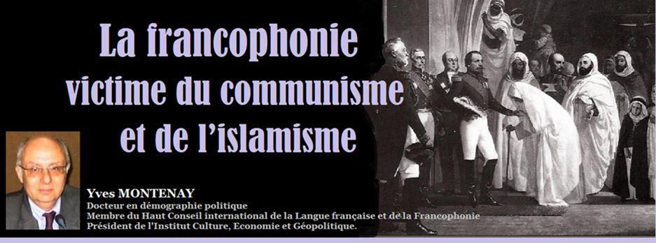
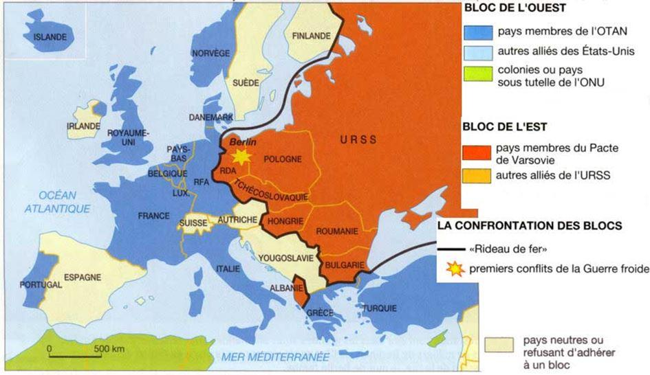
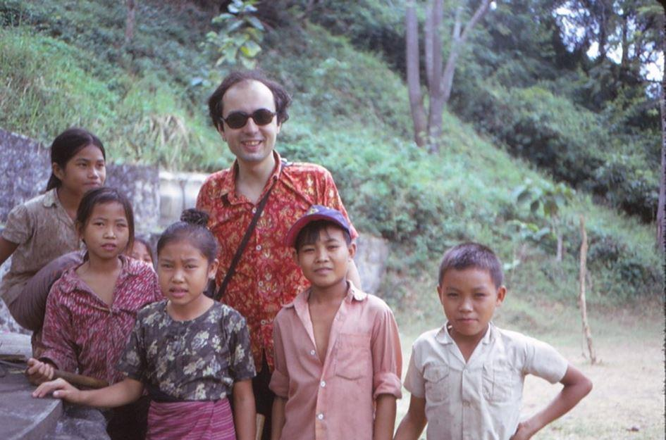
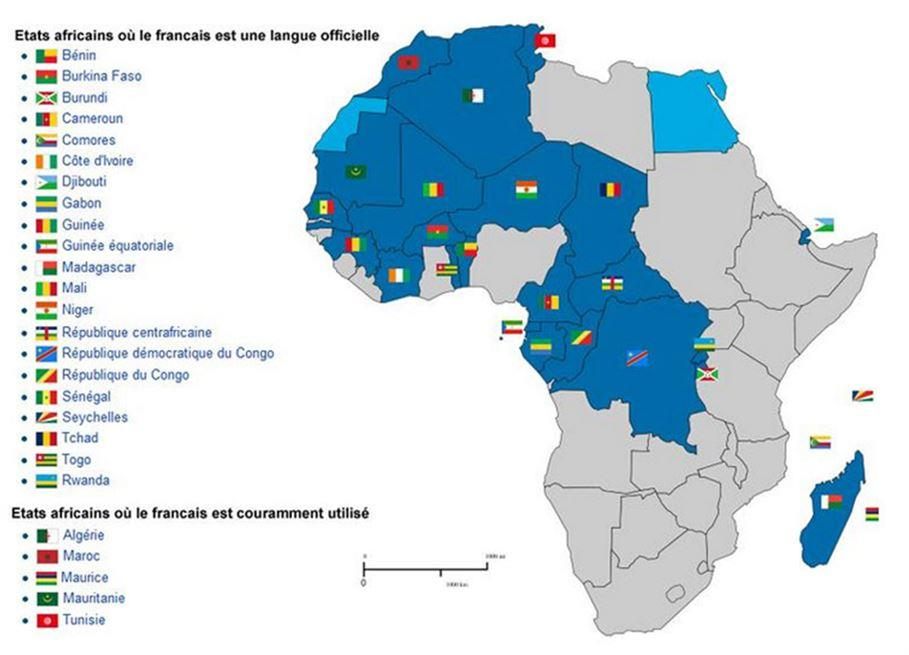

La francophonie victime du communisme et de l’islamisme
par Yves MONTENAY

Au 19e siècle, le français était langue internationale à plusieurs titres. C’était la langue des traités, celle de la noblesse et de la grande bourgeoisie européenne, mais aussi turque, égyptienne, libanaise et dans une moindre mesure tunisienne (avant la colonisation pour ces deux derniers pays). Avec les mouvements démocratiques ou révolutionnaires, toujours au 19e siècle, elle était en train de gagner de plus larges publics.
Mais les bouleversements politiques de la première guerre mondiale et de ses conséquences jusqu’à aujourd’hui lui ont coûté cher. Et en particulier les révolutions communistes.
Le communisme et la francophonie russe
Le français était très implanté en Russie, où ceux qui disposaient de quelques moyens « importaient » une nounou puis un précepteur francophone. Tolstoï, dans « Guerre et Paix » qui décrit la Russie face à Napoléon précise sans cesse « il dit en français… », « il revint au russe pour une plaisanterie un peu leste ». Plus tard, Alexandre Dumas se flattait d’avoir parcouru la Russie pour faire des conférences, exclusivement en français bien entendu.
La révolution soviétique a tué ou exilé les nobles et grands bourgeois francophones. Dans ma jeunesse, on parlait des vieux princes russes chauffeurs de taxi. Les uns se sont fondus dans la population française et d’autres ont maintenu une activité francophone aux États-Unis : leur disparition est une des raisons de la baisse cette activité depuis quelques décennies.
Des personnes plus modestes ont maintenu un intérêt pour le français en Russie, mais ce n’est plus qu’une langue étrangère encore prestigieuse.

Les autres communismes européens
De même, la prise de pouvoir en Europe centrale et orientale par les communistes en 1945 – 47 a éliminé la noblesse et la bourgeoisie francophone. Et cela a été accentué par l’obligation de l’apprentissage du russe.
Cela a touché les trois pays baltes (l’Estonie, la Lettonie et la Lituanie), la Pologne, l’Allemagne de l’Est, la Hongrie, la Tchécoslovaquie et la Bulgarie.
Avec une exception toutefois : la Roumanie. Le communisme particulièrement dictatorial de Nicolas Ceausescu était doublé d’un nationalisme sourcilleux. Il s’opposa à la généralisation du russe et accentua au contraire l’enseignement du français, déjà très répandu.
Je suis allé plusieurs fois en Roumanie communiste et ai pu m’entretenir en français avec des gens de tous niveaux jusqu’au fond des campagnes.
Lors de la chute du communisme, les derniers francophones d’Europe centrale et orientale hors Roumanie avaient environ 60 ans, ce qui a pu faire illusion un certain temps. Mais la grande affaire fut le remplacement du russe par l’anglais grâce à un déluge de bourses et de subventions à des associations étudiantes de la part des États-Unis.
C’est une des raisons de la progression de l’anglais à Bruxelles : un haut fonctionnaire tchèque et son homologue estonien n’ont rien de commun linguistiquement, à part leurs études dans une université américaine. Ils communiquent donc spontanément en anglais pendant leur travail, ce qui s’ajoute aux autres raisons de l’invasion de l’anglais dans les organes de la commission européenne. Invasion qui demeure malgré le Brexit1.
Étant retourné en Roumanie dans les années 1990, j’ai pu continuer à y travailler en français, mais l’offensive anglophone y était déjà puissante, et a redoublé avec l’adhésion de la Roumanie à l’Union Européenne.
Il reste dans ce pays plusieurs filières francophones importantes, notamment en médecine et grâce à certaines entreprises, dont Renault, mais le basculement est très avancé dans la jeunesse.
Le cas du Vietnam, du Laos et du Cambodge
AU VIETNAM
Au Vietnam, le français était bien implanté et de nombreux Vietnamiens se sont illustrés dans les sciences ou la littérature francophone. Ho Chi Minh lui-même semble n’avoir lu que des livres en français, comme en témoigne la bibliothèque de sa maison devenue musée.
Comme dans les autres pays communistes, les suites de la prise de pouvoir ont été le meurtre ou l’exil d’une bonne partie des francophones.
Mais une deuxième raison semble s’y être ajoutée plus qu’ailleurs : l’éradication obstinée de toute pensée « impure » que ce soit en français ou en langue vietnamienne traditionnelle.
En effet, comme dans d’autres pays communistes et comme ce fut très bien écrit par Georges Orwell dans « 1984 », le pouvoir change la langue et cela rend difficilement compréhensible la littérature traditionnelle qui aurait pu s’opposer au lavage de cerveau…
Les francophones s’exilèrent en France, mais aussi aux États-Unis.
Lors de mes séjours dans ce pays dans les années 1980, on entendait Édith Piaf ou Aznavour dans la banlieue sud de Los Angeles. Il n’est malheureusement pas évident que ces Vietnamiens aient transmis leur francophonie à leurs enfants…
L’échec du régime communiste vietnamien, concrétisé par une disette aiguë, comme en URSS, puis en Chine et pour les mêmes raisons, l’obligea à s’ouvrir aux investissements étrangers à partir de 1989, suivant en cela avec retard l’évolution chinoise.
Mais le monde était devenu anglophone entre-temps et la langue commune entre les investisseurs taïwanais, japonais ou autres asiatiques non francophones d’une part, et les cadres Vietnamiens d’autre part fut assez naturellement l’anglais.
Demeure néanmoins une certaine coopération avec la France notamment en matière médicale, et le militantisme francophone d’un petit nombre d’écoles du Sud-Vietnam.
AU LAOS

Yves Montenay au Laos (1974)
Au Laos, la prise de pouvoir par les communistes en 1974 (j’y étais2) déclencha le même mouvement d’exil des cadres francophones. Il suffisait de franchir le Mékong à la nage pour se retrouver en sécurité en Thaïlande.
Je suis retourné dans ce pays en 1984, lors de la libération des cadres non communistes massivement condamnés à 10 ans de prison, ce qui a entraîné un regain de la francophonie, avec l’implantation de quelques écoles et la fondation de l’ENA laotienne, en continuité d’une école française préexistante.
Mais, depuis, le pays est entre les mains des Chinois de Thaïlande dont la francophonie ne me paraît pas évidente.
AU CAMBODGE
Au Cambodge, le massacre des francophones a été encore plus direct.
Au lendemain du transfert de la population de Phnom Penh en 1976 dans les camps khmers rouges, il y a eu un appel : « nous avons besoin de francophones, levez la main ». De nombreuses mains se levèrent en espérant un régime de faveur, car il était clair que la famine allait décimer les camps.
Les intéressés furent invités à rencontrer immédiatement l’administration et on ne les revit jamais. Depuis plus personne n’avoua parler français jusqu’à la chute du régime en 1979.
Revenu alors dans ce pays, je tombai sur un coopérant australien distribuant l’aide internationale.
À ma question « Pourquoi faites-vous votre formation en anglais, alors que vos interlocuteurs ne connaissent pas cette langue et que certains sont francophones ? », j’eus droit en retour à « Sale colonialiste, vous n’avez pas compris que votre temps était fini ?! ».
Le cas du Maghreb
Au Maghreb, on ne peut pas vraiment parler de communisme, puisque ce dernier est athée alors que les régimes des trois pays s’appuient sur l’islam.
Néanmoins l’influence de l’URSS en Algérie, ainsi que celle de la frange intellectuelle anticolonialiste française, notamment représentée par « les pieds rouges », poussa à socialiser les régimes.
Cette mode passa vite au Maroc, moins vite en Tunisie, où elle a laissé des traces, et il fallut une réaction vigoureuse de Bourguiba pour en sortir.
Mais l’Algérie y patauge toujours et les entreprises françaises ont disparu du pays, alors qu’elles sont encore nombreuses en Tunisie et au Maroc, où elles fonctionnent en français.
Ce qui explique que le Maroc soit aujourd’hui vraisemblablement plus francophone que l’Algérie et vienne même de réimplanter le français dans l’enseignement des sciences au lycée à partir de la seconde.
Au socialisme, en déclin, se substitue maintenant comme ennemi du français l’islamisme qui progresse dans de nombreux milieux maghrébins.
Il y eu d’abord dans les années 1970 l’arabisation de l’enseignement, due au contexte de l’époque plus qu’à l’islamisme proprement dit. Par contre sa mise en œuvre fut largement faite par des enseignants envoyés par l’Égypte, souvent des Frères musulmans ou sympathisants dont ce pays voulait se débarrasser. Pendant la guerre civile algérienne de la dernière décennie du XXe siècle, ce sont bien les insurgés islamistes qui ont égorgé des enseignantes de français, devenu « langue étrangère » si bien que toujours largement pratiqué : une femme qui travaille et enseigne une langue impie est doublement coupable. Ensuite l’influence importante des islamistes au sommet de l’État, en Algérie surtout, pousse à l’éradication du français dans l’enseignement supérieur scientifique (les autres branches étant arabisées) et à l’anglicisation dans les trois pays3.
Plus au sud, l’influence de l’URSS n’a été que momentanée, mais c’est maintenant le djihadisme, c’est-à-dire les diverses branches armées de l’islamisme qui est à l’offensive.
L’Afrique subsaharienne échappe au communisme
L’action anticoloniale du communisme international découle notamment d’une erreur d’analyse économique de Lénine. Ce dernier, comme une partie de l’élite française, était persuadé que la prospérité occidentale venait de l’exploitation de ses colonies. Pour le triomphe du communisme il fallait donc pousser ces dernières à l’indépendance, et le capitalisme s’écroulerait de lui-même.
En Indochine, l’appui de la Chine communiste explique le succès des régimes locaux. Nous venons de voir le cas du Maghreb, reste celui de l’Afrique subsaharienne.
Dès les années 1930, il y eu un grand effort de séduction par l’URSS des élites montantes d’Afrique subsaharienne et des Antilles, qui n’étaient alors pas encore départements français, afin de générer des indépendances communistes.
La deuxième guerre mondiale retarda d’une dizaine d’années ces projets, ensuite les autonomies croissantes conçues par De Gaulle puis organisées par la IVe République, donnèrent un rôle croissant à ces élites, ce qui mena une partie d’entre elles à abandonner leurs mentors soviétiques.
Ce fut le cas de Senghor4, d’Houphouët-Boigny et, en Martinique, d’Aimé Césaire, resté à gauche mais rallié au départementalisme.
Et nous retrouvons ainsi Senghor, devenu président du Sénégal, Norodom Sihanouk, roi du Cambodge, Habib Bourguiba, président de la Tunisie et Amani Diori, président du Niger, lancer la francophonie en 1970.
Les anciennes colonies françaises et belges ont été scolarisées en français. Or « ma » règle expérimentale selon laquelle trois générations de scolarisation dans la langue officielle transforment cette dernière en langue maternelle commence à jouer massivement en Afrique. Aujourd’hui, la majorité des 300 millions de francophones mondiaux sont africains, subsahariens surtout, et ils seront bientôt 500 millions.

Afrique francophone – mars 2018
Nous sommes dans une situation entièrement nouvelle où la situation du français dépend de sa situation en Afrique subsaharienne, et notamment de décisions de gouvernements n’ayant pas toujours la gouvernance comme premier souci.
Un exemple préoccupant est la brusque « défection » du Rwanda qui est passé du français à l’anglais dans l’enseignement public au début des années 2000 pour favoriser la prospérité du groupe anglophone qui avait pris le pouvoir. Et une pression médiatique s’exerce un peu partout sous le double prétexte de la liquidation de l’héritage colonial et d’un développement économique qui serait favorisé par l’adoption de l’anglais, idée fausse5, mais sans cesse reprise dans les réseaux sociaux antifrançais.
Cette multiplication des francophones africains est donc à la fois une chance et un risque considérable. Sans l’Afrique, la francophonie de langue maternelle se réduirait à moins d’une centaine de millions personnes principalement en France et au Québec, donc peu représentative de la population mondiale, et sans rôle international.
Or voici qu’apparaît un nouveau péril, le djihadisme, branche violente de l’islamisme.
La menace islamiste contre la francophonie africaine
La prise de contrôle de l’Afghanistan par les talibans éclaire dramatiquement ce qui se passe au Sahel6 : la disparition de la scolarisation des femmes dans les zones dont les gouvernements perdent le peu de contrôle qu’ils avaient, et où cette scolarisation est récente et partielle, donc n’avait pas encore eu de conséquences linguistiques.
En effet la première mesure des djihadistes lors de leur contrôle d’un nouveau territoire est d’interdire la scolarisation des filles7, soit totalement, soit jusqu’à 9 ou 12 ans. Et la scolarisation, pour les filles comme pour les garçons, est souvent celle des écoles coraniques, c’est-à-dire où la matière principale est l’apprentissage du Coran et de la langue arabe. Et non du français ou de la langue locale.
État Islamique au Mali
L’objet du présent article n’est pas d’en discuter l’impact sur le développement et la fécondité (les filles doivent être mariées dès la puberté, les femmes ne peuvent travailler et ne doivent sortir qu’avec « leur » homme, père, mari, frère…), impact que je juge personnellement catastrophique, car je me limite ici à la question de la diffusion du français.
D’un totalitarisme à l’autre
Après les immenses dégâts du communisme, la francophonie doit donc maintenant faire face à l’islamisme. Bref un nouveau totalitarisme relaie le précédent. Et tout ce qui casse une société est nuisible à la situation du français dans le monde.
Bien que certains estiment très convenue, voire néocoloniale, la relation entre diffusion du français et développement économique et humain, je la pense profondément vérifiée par l’histoire du 20e siècle et celle qui s’accélère aujourd’hui.
Partager cette page